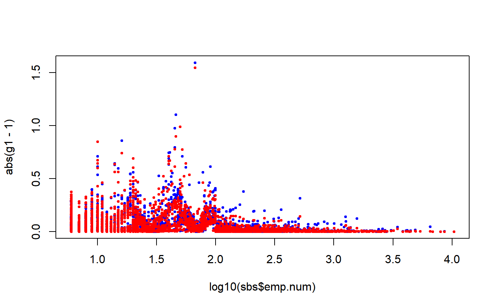

e.calibrate.RdAdds to an analytic object the calibrated weights column.
e.calibrate(design, df.population, calmodel = if (inherits(df.population, "pop.totals")) attr(df.population, "calmodel"), partition = if (inherits(df.population, "pop.totals")) attr(df.population, "partition") else FALSE, calfun = c("linear", "raking", "logit"), bounds = c(-Inf, Inf), aggregate.stage = NULL, sigma2 = NULL, maxit = 50, epsilon = 1e-07, force = TRUE)
| design | Object of class |
|---|---|
| df.population | Data frame containing the known population totals for the auxiliary variables. |
| calmodel | Formula defining the linear structure of the calibration model. |
| partition | Formula specifying the variables that define the "calibration domains" for the model (see ‘Details’); |
| calfun |
|
| bounds | Allowed range for the ratios between calibrated and initial weights; the default is
|
| aggregate.stage | An integer: if specified, causes the calibrated weights to be constant within sampling units at this stage. |
| sigma2 | Formula specifying a possible heteroskedasticity effect in the calibration model;
|
| maxit | Maximum number of iterations for the Newton-Raphson algorithm; the default is |
| epsilon | Tolerance for the absolute relative differences between the population totals and the corresponding
estimates based on the calibrated weights; the default is |
| force | If |
This function creates an object of class cal.analytic. A cal.analytic object makes it possible to compute estimates and standard errors of calibration estimators [Deville, Sarndal 92] [Deville, Sarndal, Sautory 93].
The mandatory argument calmodel symbolically defines the calibration model you intend to use, that is - in the language of the Generalized Regression Estimator - the assisting linear regression model underlying the calibration problem. More specifically, the calmodel formula identifies the auxiliary variables and the constraints for the calibration problem, with a notation inspired by [Wilkinson, Rogers 73]. For example, calmodel=~(X+Z):C+(A+B):D-1 defines the calibration problem in which constraints are imposed: (i) on the totals of auxiliary (quantitative) variables X and Z within the subpopulations identified by the (qualitative) classification variable C and, at the same time, (ii) on the absolute frequency of the (qualitative) variables A and B within the subpopulations identified by the (qualitative) classification variable D.
The design variables referenced by calmodel must be numeric or factor and must not contain any missing value (NA).
Problems for which one or more qualitative variables can be “factorized” in the formula that specifies the calibration model, are particularly interesting. These variables split the population into non-overlapping subpopulations known as “calibration domains” for the model. An example is provided by the statement calmodel=~(A+B+X+Z):D-1 in which the variable that identifies the calibration domains is D; similarly, the formula calmodel=~(A+B+X+Z):D1:D2-1 identifies as calibration domains the subpopulations determined by crossing the modalities of D1 and D2. The interest in models of this kind lies in the fact that the global calibration problem they describe can, actually, be broken down into local subproblems, one per calibration domain, which can be solved separately [Vanderhoeft 01]. Thus, for example, the global problem defined by calmodel=~(A+B+X+Z):D-1 is equivalent to the sequence of problems defined by the “reduced model” calmodel=~A+B+X+Z-1 in each of the domains identified by the modalities of D. The opportunity to separately solve the subproblems related to different calibration domains achieves a significant reduction in computation complexity: the gain increases with increasing survey data size and (most importantly) with increasing auxiliary variables number.
The optional argument partition makes it possible to choose, in cases in which the calibration problem can be factorized, whether to solve the problem globally or in a partitioned way (that is, separately for each calibration domain). The global solution (which is the default option) can be selected invoking the e.calibrate function with partition=FALSE. To request the partitioned solution - a strongly recommended option when dealing with a lot of auxiliary variables and big data sizes - it is necessary to specify via partition the variables defining the calibration domains for the model. If a formula is passed through the partition argument (for example: partition=~D1:D2), the program checks that calmodel actually describes a "reduced model" (for example: calmodel=~A+B+X+Z-1), that is it does not reference any of the partition variables; if this is not the case, the program stops and prints an error message. Notice that a formula like partition=~D1+D2 will be automatically translated into the factor-crossing formula partition=~D1:D2.
The design variables referenced by partition (if any) must be factor and must not contain any missing value (NA).
The mandatory argument df.population is used to specify the known totals of the auxiliary variables referenced by calmodel within the subpopulations (if any) identified by partition. These known totals must be stored in a data frame whose structure (i) depends on the values of calmodel and partition and (ii) must conform to a standard. In order to facilitate understanding of and compliance with this standard, the ReGenesees package provides the user with four functions: pop.template, population.check, pop.desc and fill.template. The pop.template function is able to guide the user in constructing the known totals data frame for a specific calibration problem, the pop.desc function provides a natural language description of the template structure, the fill.template function can be exploited to automatically fill the template when a sampling frame is available, while the population.check function allows to check whether a known totals data frame conforms to the standard required by e.calibrate. In any case, if the df.population data frame does not comply with the standard, the e.calibrate function stops and prints an error message: the meaning of the message should help the user diagnose the cause of the problem.
The calfun argument identifies the distance function to be used in the calibration process. Three built-in functions are provided: "linear", "raking", and "logit" (see [Deville, Sarndal, Sautory 93]). The default is "linear", which corresponds to the euclidean metric and yields the Generalized Regression Estimator (provided that no range restrictions are imposed on the g-weights). The "raking" distance corresponds to the “multiplicative method” of [Deville, Sarndal, Sautory 93].
The bounds argument allows to add “range constraints” to the calibration problem. To be precise, the interval defined by bounds will contain the values of the ratios between final (calibrated) and initial (direct) weights. The default value is c(-Inf,Inf), i.e. no range constraints are imposed. These constraints are optional unless the "logit" function is selected: in the latter case the range defined by bounds has to be finite (see, again, [Deville, Sarndal, Sautory 93]).
The value passed by the aggregate.stage argument must be an integer between 1 and the number of sampling stages of design. If specified, causes the calibrated weights to be constant within sampling units selected at the aggregate.stage stage (actually this is only allowed if the initial weights had already this property, as it is sometimes the case in multistage cluster sampling). If not specified, the calibrated weights may differ even for sampling units with identical initial weights. The same holds if some final units belonging to the same cluster selected at the stage aggregate.stage fall in distinct calibration domains (i.e. if the domains defined by partition "cut across" the aggregate.stage-stage clusters).
The argument sigma2 can be used to take into account a possible heteroskedasticity effect in the (assisting linear regression model underlying the) calibration problem. In such cases, sigma2 must identify some variable to which the variances of the error terms are believed to be proportional. Notice that sigma2 can also be interpreted from a "purely calibration-based" point of view: it corresponds to the \(1/q_k\) unit-weights appearing inside the distance measures of [Deville, Sarndal 92] [Deville, Sarndal, Sautory 93]. The final effect is, on average, that calibrated weights associated to higher values of sigma2 tend to stay closer to their corresponding initial weights.
Note that it is technically possible to exploit this behaviour in order to prevent some subset of the initial weights from being altered by calibration. The trick is simple: just build a convenience sigma2 variable whose values are set to some very high value (e.g. 1E12) for those units whose initial weight must be preserved, and to 1 otherwise (see ‘Examples’). Nevertheless, this trick should be used sparingly and very carefully, as otherwise it may: (i) cause the calibration algorithm to not converge, (ii) result in introducing bias in calibration estimates. In particular, with respect to bias, one should not select the units whose weight must be preserved on the basis of the current sample.
The sigma2 formula can reference just a single design variable: such variable must be numeric, strictly positive and must not contain NAs. If aggregate.stage is specified, sigma2 must obviously be constant inside aggregate.stage-stage clusters (otherwise the function stops and prints an error message).
The maxit argument sets the maximum number of iteration for the Newton-Raphson algorithm that is used to solve the calibration problem (the only exception being unbounded linear calibration, i.e. calfun='linear' and bounds=c(-Inf, Inf), which is actually handled by directly solving a linear problem). The default value of maxit is 50.
The epsilon argument determines the convergence criterion for the optimization algorithm: it fixes the maximum allowed absolute value for the relative differences between the population totals and the corresponding estimates based on the calibrated weights. The default value is 10^-7.
The calibrated weights computed by e.calibrate must ensure that the calibration estimators of the auxiliary variables exactly match the corresponding known population totals. It is, however, possible (more likely when range constraints are imposed) that, for a specific calibration problem and for given values of epsilon and maxit, the solving algorithm does not converge. In this case, if force = FALSE, e.calibrate stops and prints an error message. If - on the contrary - force = TRUE, the function is forced to return the best approximation achieved for the calibrated weights, nevertheless signaling the calibration failure by a warning (see also Section 'Calibration process diagnostics').
When, dealing with a factorizable calibration problem, the user selects the partitioned solution, the global calibration problem gets split into as many sub-problems as the number of subpopulations defined by partition. In turn, each one of these calibration sub-problems can end without convergence on any one of the involved auxiliary variables. A calibration process with such a complex structure needs some ad hoc tool for error diagnostics. For this purpose, every call to e.calibrate creates, by side effect, a dedicated data structure named ecal.status into the .GlobalEnv.
ecal.status is a list with up to three components: the first, "call", identifies the call to e.calibrate that generated the list, the second, return.code, is a matrix each element of which identifies the return code of a specific calibration sub-problem. The meaning of the return codes is as follows:
CODE MEANING -1........not yet tackled sub-problem; 0........solved sub-problem (convergence achieved); 1........unsolved sub-problem (no convergence): output forced.
Recall that the latter return code (1) may only occur if force = TRUE.
If any return.code equal to 1 exists, the ecal.status list gains a third component named "fail.diagnostics" which is itself a list; its components correspond to sub-problems for which convergence was not achieved, and store useful information about the auxiliary variables for which calibration constraints are violated. Therefore, users can exploit ecal.status to identify sub-problems and variables from which errors stemmed, hence taking a step forward to eliminate them.
Notice, lastly, that the ecal.status list will also be persistently bound to the e.calibrate return object, stored inside a dedicated attribute. For the inspection of such diagnostics information the check.cal function is available.
An object of class cal.analytic. The data frame it contains includes (in addition to the data already stored in design) the calibrated weights column. The name of this column is obtained by pasting the name of the initial weights column with the string ".cal".
The cal.analytic class is a specialization of the analytic class; this means that an object created by e.calibrate inherits from the analytic class and you can use on it all methods defined on the latter class, e.g. print, summary, weights. Moreover, a calibrated design can be passed again to e.calibrate, thus undergoing further calibration steps.
Deville, J.C., Sarndal, C.E. (1992) “Calibration Estimators in Survey Sampling”, Journal of the American Statistical Association, Vol. 87, No. 418, pp. 376-382.
Deville, J.C., Sarndal, C.E., Sautory, O. (1993) “Generalized Raking Procedures in Survey Sampling”, Journal of the American Statistical Association, Vol. 88, No. 423, pp. 1013-1020.
Zardetto, D. (2015) “ReGenesees: an Advanced R System for Calibration, Estimation and Sampling Error Assessment in Complex Sample Surveys”. Journal of Official Statistics, 31(2), 177-203. doi: https://doi.org/10.1515/jos-2015-0013.
Wilkinson, G.N., Rogers, C.E. (1973) “Symbolic Description of Factorial Models for Analysis of Variance”, Journal of the Royal Statistical Society, series C (Applied Statistics), Vol. 22, pp. 181-191.
Vanderhoeft, C. (2001) “Generalized Calibration at Statistic Belgium”, Statistics Belgium Working Paper n. 3.
Sarndal, C.E., Lundstrom, S. (2005) Estimation in surveys with nonresponse. John Wiley & Sons.
Scannapieco, M., Zardetto, D., Barcaroli, G. (2007) “La Calibrazione dei Dati con R: una Sperimentazione sull'Indagine Forze di Lavoro ed un Confronto con GENESEES/SAS”, Contributi Istat n. 4., https://www.istat.it/it/files/2018/07/2007_4.pdf.
e.svydesign to bind survey data and sampling design metadata, svystatTM, svystatR, svystatS, svystatSR, svystatB, svystatQ and svystatL for calculating estimates and standard errors, pop.template for constructing known totals data frames in compliance with the standard required by e.calibrate, population.check to check that the known totals data frame satisfies that standard, pop.desc to provide a natural language description of the template structure, fill.template to automatically fill the template when a sampling frame is available, bounds.hint to obtain a hint for range restricted calibration, g.range to asses the variation of weights after calibration and check.cal to check if calibration constraints have been fulfilled.
###################################################################### # Calibration of a design object according to different calibration # # models (the known totals data frames pop01, \ldots, pop05p and the # # bounds vector are all contained in the data.examples file). # # For the examples relating to calibration models that can be # # factorized both a global and a partitioned solution are given. # ###################################################################### # Load household data: data(data.examples) # Creation of the object to be calibrated: des<-e.svydesign(data=example,ids=~towcod+famcod,strata=~SUPERSTRATUM, weights=~weight) # 1) Calibration on the total number of units in the population # (totals in pop01): descal01<-e.calibrate(design=des,df.population=pop01,calmodel=~1, calfun="logit",bounds=bounds,aggregate.stage=2) # Printing descal01 immediately recalls that it is a # "calibrated" object: descal01#> Calibrated, Stratified 2 - Stage Cluster Sampling Design (with replacement) #> - [55] strata #> - [1307, 2372] clusters #> #> Call: #> e.calibrate(design = des, df.population = pop01, calmodel = ~1, #> calfun = "logit", bounds = bounds, aggregate.stage = 2)#> Calibrated, Stratified 2 - Stage Cluster Sampling Design (with replacement) #> - [55] strata #> - [1307, 2372] clusters #> #> Call: #> e.calibrate(design = des, df.population = pop01, calmodel = ~1, #> calfun = "logit", bounds = bounds, aggregate.stage = 2) #> #> Weights: #> Min. 1st Qu. Median Mean 3rd Qu. Max. #> 95.09 217.86 318.55 306.10 360.75 927.21 #> #> Sample stratum sizes: #> 1 2 3 4 5 6 7 8 9 10 11 12 13 14 15 16 17 18 19 20 21 22 23 24 #> Obs 15 26 36 36 27 53 66 34 51 31 15 18 81 12 152 6 2 33 57 14 17 60 55 71 #> PSUs 2 2 32 2 2 2 3 2 43 28 12 12 3 2 128 6 2 2 39 12 12 2 2 2 #> 25 26 27 28 29 30 31 32 33 34 35 36 37 38 39 40 41 42 43 44 45 46 47 48 #> Obs 51 69 24 20 17 48 50 54 27 34 487 19 25 49 93 39 68 24 165 66 48 60 34 28 #> PSUs 2 3 21 17 2 35 2 2 2 2 402 16 23 2 3 31 3 2 131 47 41 43 26 24 #> 49 50 51 52 53 54 55 #> Obs 68 48 55 88 28 75 71 #> PSUs 2 2 2 3 2 58 2 #> #> Data variables: #> [1] "towcod" "famcod" "key" "weight" "stratum" #> [6] "SUPERSTRATUM" "sr" "regcod" "procod" "x1" #> [11] "x2" "x3" "y1" "y2" "y3" #> [16] "age5c" "age10c" "sex" "marstat" "z" #> [21] "income" "weight.cal"#> towcod famcod key weight stratum SUPERSTRATUM sr regcod procod x1 x2 x3 y1 y2 #> 1 147 3103 1 485.8 803 26 0 7 8 0 0 0 0 0 #> 2 147 3103 2 485.8 803 26 0 7 8 0 0 0 1 1 #> 3 147 3109 3 485.8 803 26 0 7 8 0 0 0 1 1 #> 4 147 3111 4 485.8 803 26 0 7 8 0 0 0 0 0 #> 5 147 3120 5 485.8 803 26 0 7 8 0 0 1 1 1 #> 6 147 3121 6 485.8 803 26 0 7 8 0 0 0 0 0 #> y3 age5c age10c sex marstat z income weight.cal #> 1 0 3 5 f unmarried 148.32432 1158 481.6383 #> 2 0 2 4 f married 88.57746 1268 481.6383 #> 3 0 3 6 f married 115.07377 108 483.7165 #> 4 0 4 7 f married 86.37647 1700 483.7165 #> 5 0 2 4 f married 110.52172 537 483.7165 #> 6 0 3 5 f married 134.40092 2143 483.7165#> Min. 1st Qu. Median Mean 3rd Qu. Max. #> 95.09 217.86 318.55 306.10 360.75 927.21# Checking the result (first add the new 'ones' variable # to estimate the number of final units in the population): descal01<-des.addvars(descal01,ones=1) svystatTM(descal01, ~ones)#> Total SE #> ones 918300 1.201834e-10# 2) Calibration on the marginal distributions of sex and marstat # (totals in pop02): descal02<-e.calibrate(design=des,df.population=pop02, calmodel=~sex+marstat-1,calfun="logit",bounds=bounds, aggregate.stage=2) # Checking the result: svystatTM(descal02,~sex+marstat)#> Total SE #> sexf 468366 3.355174e-11 #> sexm 449934 4.622560e-11 #> marstatmarried 532376 1.624207e-11 #> marstatunmarried 311996 1.254943e-10 #> marstatwidowed 73928 1.917476e-11# 3) Calibration (global solution) on the joint distribution of sex # and marstat (totals in pop03): descal03<-e.calibrate(design=des,df.population=pop03, calmodel=~marstat:sex-1,calfun="logit",bounds=bounds) # Checking the result: svystatTM(descal03,~sex,~marstat) # or: svystatTM(descal03,~marstat,~sex)#> marstat Total.sexf Total.sexm SE.Total.sexf SE.Total.sexm #> married married 272172 260204 6.673482e-11 4.242815e-11 #> unmarried unmarried 159280 152716 8.637640e-12 2.957805e-11 #> widowed widowed 36914 37014 1.398840e-12 7.555014e-13# which, obviously, is not respected by descal02 (notice the size of SE): svystatTM(descal02,~sex,~marstat)#> marstat Total.sexf Total.sexm SE.Total.sexf SE.Total.sexm #> married married 272111.67 260264.33 4697.938 4697.938 #> unmarried unmarried 159238.03 152757.97 4438.246 4438.246 #> widowed widowed 37016.31 36911.69 2290.644 2290.644# 3.1) Again a calibration on the joint distribution of sex and marstat # but, this time, with the partitioned solution (partition=~sex, # totals in pop03p): descal03p<-e.calibrate(design=des,df.population=pop03p, calmodel=~marstat-1,partition=~sex,calfun="logit", bounds=bounds) # Checking the result: svystatTM(descal03p,~sex,~marstat)#> marstat Total.sexf Total.sexm SE.Total.sexf SE.Total.sexm #> married married 272172 260204 6.673482e-11 4.475639e-11 #> unmarried unmarried 159280 152716 8.637640e-12 3.381298e-11 #> widowed widowed 36914 37014 1.398840e-12 7.587658e-13# 4) Calibration (global solution) on the totals for the quantitative # variables x1, x2 and x3 in the subpopulations defined by the # regcod variable (totals in pop04): descal04<-e.calibrate(design=des,df.population=pop04, calmodel=~(x1+x2+x3):regcod-1,calfun="logit", bounds=bounds,aggregate.stage=2) # Checking the result: svystatTM(descal04,~x1+x2+x3,~regcod)#> regcod Total.x1 Total.x2 Total.x3 SE.Total.x1 SE.Total.x2 SE.Total.x3 #> 6 6 18403 5870 6525 2.528340e-12 1.041907e-12 4.874376e-13 #> 7 7 22484 7557 8092 1.477221e-12 7.347449e-13 1.744538e-12 #> 10 10 13726 4884 5659 7.875984e-13 3.360599e-13 5.570303e-13# 4.1) Same problem with the partitioned solution (partition=~regcod, # totals in pop04p): descal04p<-e.calibrate(design=des,df.population=pop04p, calmodel=~x1+x2+x3-1,partition=~regcod,calfun="logit", bounds=bounds,aggregate.stage=2) # Checking the result: svystatTM(descal04p,~x1+x2+x3,~regcod)#> regcod Total.x1 Total.x2 Total.x3 SE.Total.x1 SE.Total.x2 SE.Total.x3 #> 6 6 18403 5870 6525 3.377659e-12 1.343405e-12 5.599769e-13 #> 7 7 22484 7557 8092 1.477221e-12 8.935162e-13 1.751581e-12 #> 10 10 13726 4884 5659 6.495574e-13 2.544583e-13 4.316836e-13# 5) Calibration (global solution) on the total for the quantitative # variable x1 and on the marginal distribution of the qualitative # variable age5c, in the subpopulations defined by crossing sex # and marstat (totals in pop05): descal05<-e.calibrate(design=des,df.population=pop05, calmodel=~(age5c+x1):sex:marstat-1,calfun="logit", bounds=bounds) # Checking the result: svystatTM(descal05,~age5c+x1,~sex:marstat)#> sex marstat Total.age5c1 Total.age5c2 Total.age5c3 Total.age5c4 #> f.married f married 11023 92213 114859 47614 #> m.married m married 7770 83894 122823 36003 #> f.unmarried f unmarried 56857 45467 46391 9573 #> m.unmarried m unmarried 49705 50453 39974 12122 #> f.widowed f widowed 2099 8122 16437 8574 #> m.widowed m widowed 561 12013 14556 8024 #> Total.age5c5 Total.x1 SE.Total.age5c1 SE.Total.age5c2 #> f.married 6463 14750 1.235338e-12 1.272409e-11 #> m.married 9714 18171 3.976661e-13 3.759196e-12 #> f.unmarried 992 8446 1.132742e-12 2.141538e-12 #> m.unmarried 462 8210 6.700997e-12 5.211010e-12 #> f.widowed 1682 2737 9.508466e-14 2.842057e-13 #> m.widowed 1860 2298 2.897581e-14 1.203842e-12 #> SE.Total.age5c3 SE.Total.age5c4 SE.Total.age5c5 SE.Total.x1 #> f.married 2.203339e-11 6.260919e-12 1.776885e-13 4.639167e-12 #> m.married 1.948546e-11 3.459667e-12 2.468354e-13 3.448681e-12 #> f.unmarried 4.963355e-12 2.534411e-13 9.737936e-14 9.948751e-12 #> m.unmarried 7.230665e-13 8.158830e-13 6.224669e-14 2.002933e-11 #> f.widowed 6.995869e-13 7.100555e-13 1.905831e-13 3.481116e-13 #> m.widowed 4.345409e-13 5.670255e-13 8.655409e-14 3.818179e-13# 5.1) Same problem with the partitioned solution (partition=~sex:marstat, # totals in pop05p): descal05p<-e.calibrate(design=des,df.population=pop05p, calmodel=~age5c+x1-1,partition=~sex:marstat, calfun="logit",bounds=bounds) # Checking the result: svystatTM(descal05p,~age5c+x1,~sex:marstat)#> sex marstat Total.age5c1 Total.age5c2 Total.age5c3 Total.age5c4 #> f.married f married 11023 92213 114859 47614 #> m.married m married 7770 83894 122823 36003 #> f.unmarried f unmarried 56857 45467 46391 9573 #> m.unmarried m unmarried 49705 50453 39974 12122 #> f.widowed f widowed 2099 8122 16437 8574 #> m.widowed m widowed 561 12013 14556 8024 #> Total.age5c5 Total.x1 SE.Total.age5c1 SE.Total.age5c2 #> f.married 6463 14750.000 1.206965e-12 1.489651e-12 #> m.married 9714 18171.000 4.175847e-13 8.763915e-12 #> f.unmarried 992 8446.000 1.040497e-12 1.892746e-12 #> m.unmarried 462 8210.001 9.082416e-12 4.539486e-12 #> f.widowed 1682 2737.000 9.359915e-14 2.575470e-13 #> m.widowed 1860 2298.000 9.631189e-14 1.450222e-12 #> SE.Total.age5c3 SE.Total.age5c4 SE.Total.age5c5 SE.Total.x1 #> f.married 2.089462e-11 1.381439e-11 1.777031e-13 1.036177e-11 #> m.married 2.107743e-11 3.450302e-12 3.029680e-13 3.038585e-12 #> f.unmarried 7.742098e-12 2.922028e-12 1.614705e-13 3.140887e-12 #> m.unmarried 8.345906e-13 7.762465e-13 5.818079e-14 1.241258e-12 #> f.widowed 1.008660e-12 6.448378e-13 1.833791e-13 5.720334e-13 #> m.widowed 4.310660e-13 4.817074e-13 7.750609e-14 4.162713e-13# Notice that 3.1 and 5.1) 5.2) do not impose the aggregate.stage=2 # condition. This condition cannot, in fact, be fulfilled because # in both cases the domains defined by partition "cut across" # the des second stage clusters (households). To compare the results, # the same choice was also made for 3) and 5). # 5.2) Just a single example to inspect the ecal.status list generated # for diagnostics purposes. # Let's shrink the bounds in order to prevent perfect convergence # (recall that force=TRUE by default): approx.cal<-e.calibrate(design=des,df.population=pop05p, calmodel=~age5c+x1-1,partition=~sex:marstat, calfun="logit",bounds=c(0.95,1.05))#> Warning: Failed to converge: worst achieved epsilon= 0.0264941359907803 in 51 iterations (variable x1), see ecal.status.#> Warning: Failed to converge: worst achieved epsilon= 0.0634422936449963 in 51 iterations (variable x1), see ecal.status.#> Warning: Failed to converge: worst achieved epsilon= 0.0419225750326229 in 51 iterations (variable x1), see ecal.status.# ...now use check.cal function to assess the amount of calibration # constraints violation: check.cal(approx.cal)#> Calibration Constraints missed (at tolerance level epsilon = 1e-07): 4 out of 36 #> - Summary of mismatches: #> #> $return.code #> f.married f.unmarried f.widowed m.married m.unmarried m.widowed #> code 1 0 1 0 0 1 #> #> $fail.diagnostics #> $fail.diagnostics$f.married #> Variable Population.Total Achieved.Estimate Difference Relative.Difference #> 6 x1 14750 15140.82 390.815 0.02649414 #> #> $fail.diagnostics$f.widowed #> Variable Population.Total Achieved.Estimate Difference Relative.Difference #> 6 x1 2737 2910.705 173.705 0.06344229 #> #> $fail.diagnostics$m.widowed #> Variable Population.Total Achieved.Estimate Difference Relative.Difference #> 6 x1 2298 2394.380 96.380 0.04192258 #> 1 age5c1 561 568.385 7.385 0.01314057 #> #> #># ...or (equivalently) inspect directly ecal.status: ecal.status#> $return.code #> f.married f.unmarried f.widowed m.married m.unmarried m.widowed #> code 1 0 1 0 0 1 #> #> $fail.diagnostics #> $fail.diagnostics$f.married #> Variable Population.Total Achieved.Estimate Difference Relative.Difference #> 6 x1 14750 15140.82 390.815 0.02649414 #> #> $fail.diagnostics$f.widowed #> Variable Population.Total Achieved.Estimate Difference Relative.Difference #> 6 x1 2737 2910.705 173.705 0.06344229 #> #> $fail.diagnostics$m.widowed #> Variable Population.Total Achieved.Estimate Difference Relative.Difference #> 6 x1 2298 2394.380 96.380 0.04192258 #> 1 age5c1 561 568.385 7.385 0.01314057 #> #>################################################# # Some examples illustrating how calibration # # can be exploited to reduce nonresponse bias # # (see, e.g. [Sarndal, Lundstrom 05]). # ################################################# # Load sbs data: data(sbs) ####################### # Full-response case. # ####################### # Create a full-response design object: sbsdes<-e.svydesign(data=sbs,ids=~id,strata=~strata,weights=~weight,fpc=~fpc) # Now estimate the average value added and its 95% confidence interval: mean.VA<-svystatTM(design=sbsdes,y=~va.imp2,estimator="Mean",vartype= "cvpct", conf.int=TRUE,conf.lev=0.95) mean.VA#> Mean CI.l(95%) CI.u(95%) CV% #> va.imp2 3250.599 3136.161 3365.038 1.79623# Compare the obtained estimate with the true population parameter: MEAN.VA<-mean(sbs.frame$va.imp2) MEAN.VA#> [1] 3136.899#> va.imp2 #> 3.624619# which, anyway, doesn't indicate a significant bias for the # full-response sample, because the 95% confidence interval # covers the true value. ################################################## # Nonresponse case: assume a response propensity # # which increases with enterprise size. # ################################################## # Set bigger response probabilities for bigger firms, # e.g. exploiting available information about the # number of employees (emp.cl): levels(sbs$emp.cl)#> [1] "[6,9]" "(9,19]" "(19,49]" "(49,99]" "(99,Inf]"p.resp <- c(.4,.6,.8,.95,.99) # Tie response probabilities to sample observations: pr<-p.resp[unclass(sbs$emp.cl)] # Now, randomly select a subsample of responding units from sbs: set.seed(12345) # (fix the RNG seed for reproducibility) rand<-runif(1:nrow(sbs)) sbs.nr<-sbs[rand<pr,] # This implies an overall response rate of about 73%: nrow(sbs.nr)/nrow(sbs)#> [1] 0.7261543# Treat the non-response sample as it was complete: this should # lead to biased estimates of value added, as the latter is # positively correlated with firms size... sbsdes.nr<-e.svydesign(data=sbs.nr,ids=~id,strata=~strata,weights=~weight)#> #> # Empty levels found in factors: nace5, dom1, strata #> # Empty levels have been dropped! #>#...indeed: old.op <- options("RG.lonely.psu"="adjust") # (prevent lonely-PSUs troubles) mean.VA.nr<-svystatTM(design=sbsdes.nr,y=~va.imp2,estimator="Mean", vartype= "cvpct",conf.int=TRUE,conf.lev=0.95) mean.VA.nr#> Mean CI.l(95%) CI.u(95%) CV% #> va.imp2 4177.553 3948.632 4406.474 2.795861# and, comparing with the true population average, we see a # significant overestimation effect, with the 95% confidence # interval not even covering the parameter: MEAN.VA#> [1] 3136.899# Nonresponse bias can be effectively reduced by calibrating # on variables explaining the response propensity: e.g., in # the present example, on the population distribution of emp.cl: # Prepare the known totals template... N.emp.cl<-pop.template(data=sbs.nr,calmodel=~emp.cl-1)#> #> # Empty levels found in factors: nace5, dom1, strata #> # Empty levels have been dropped! #>N.emp.cl#> emp.cl[6,9] emp.cl(9,19] emp.cl(19,49] emp.cl(49,99] emp.cl(99,Inf] #> 1 NA NA NA NA NA#> #> # Coherence check between 'universe' and 'template': OK #>N.emp.cl#> emp.cl[6,9] emp.cl(9,19] emp.cl(19,49] emp.cl(49,99] emp.cl(99,Inf] #> 1 5310 4778 3617 1669 1944#> #> A starting suggestion: try to calibrate with bounds=c(0.242, 3.275) #> #> Remark: this is just a hint, not an exact result #> Feasible bounds for calibration problem must cover the interval [1, 2.516] #>sbscal.nr<-e.calibrate(design=sbsdes.nr,df.population=N.emp.cl, bounds=hint) sbscal.nr#> Calibrated, Stratified Independent Unit Sampling Design (with replacement) #> - [606] strata #> - [5017] units #> #> Call: #> e.calibrate(design = sbsdes.nr, df.population = N.emp.cl, bounds = hint)# Now estimate the average value added on the calibrated design: mean.VA.cal.nr<-svystatTM(design=sbscal.nr,y=~va.imp2,estimator="Mean", vartype= "cvpct",conf.int=TRUE,conf.lev=0.95) # options(old.op) # (reset variance estimation options) # As expected, we see a significant bias reduction: MEAN.VA#> [1] 3136.899mean.VA.nr#> Mean CI.l(95%) CI.u(95%) CV% #> va.imp2 4177.553 3948.632 4406.474 2.795861mean.VA.cal.nr#> Mean CI.l(95%) CI.u(95%) CV% #> va.imp2 3370.917 3155.589 3586.246 3.259153# Even if the 95% confidence interval still doesn't cover the # true value, by calibration we passed from an initial overestimation # of about 33% to a 7% one: 100*(coef(mean.VA.nr)-MEAN.VA)/MEAN.VA#> va.imp2 #> 33.17462#> va.imp2 #> 7.460192################################################# # A multi-step calibration example showing that # # a calibrated object can be calibrated again # # (this can be sometimes useful in practice): # # Step 1: calibrate to reduce nonresponse bias; # # Step 2: calibrate again to gain efficiency. # ################################################# # Suppose you already performed a first calibration step, # as shown in the example above, with the aim of softening # nonresponse bias: sbscal.nr#> Calibrated, Stratified Independent Unit Sampling Design (with replacement) #> - [606] strata #> - [5017] units #> #> Call: #> e.calibrate(design = sbsdes.nr, df.population = N.emp.cl, bounds = hint)# Now you may want to calibrate again in order to reduce # estimators variance, by using further available auxiliary # information, e.g. the total number of employees (emp.num) # and enterprises (ent) inside the domains obtained # by crossing nace.macro and region: # Build the second step population totals template: pop2<-pop.template(sbscal.nr, calmodel=~emp.num+ent-1, partition=~nace.macro:region) # Use the fill.template function to (i) automatically compute # the totals from the universe (sbs.frame) and (ii) safely fill # the template: pop2<-fill.template(universe=sbs.frame,template=pop2)#> #> # Coherence check between 'universe' and 'template': OK #># Now perform the second calibration step: # Get a hint on the calibration bounds: hint2<-bounds.hint(sbscal.nr,pop2)#> #> A starting suggestion: try to calibrate with bounds=c(0.691, 1.239) #> #> Remark: this is just a hint, not an exact result #> Feasible bounds for calibration problem must cover the interval [0.828, 1.102] #>sbscal.nr2<-e.calibrate(design=sbscal.nr,df.population=pop2, bounds=hint2) # Notice that printing sbscal.nr2 you immediately understand # that it is a "twice-calibrated" object: sbscal.nr2#> Calibrated, Stratified Independent Unit Sampling Design (with replacement) #> - [606] strata #> - [5017] units #> #> Call: #> 2: e.calibrate(design = sbscal.nr, df.population = pop2, bounds = hint2) #> 1: e.calibrate(design = sbsdes.nr, df.population = N.emp.cl, bounds = hint)# Notice also that, even if the second calibration step causes # sbscal.nr2 to be no more exactly calibrated with respect to # emp.cl (look at the cvpct values)... old.op <- options("RG.lonely.psu"="adjust") # (prevent lonely-PSUs troubles) svystatTM(design=sbscal.nr2,y=~emp.cl,vartype="cvpct")#> Total CV% #> emp.cl[6,9] 5292.797 0.8556058 #> emp.cl(9,19] 4761.984 0.6970512 #> emp.cl(19,49] 3626.837 0.6768815 #> emp.cl(49,99] 1679.097 0.5751650 #> emp.cl(99,Inf] 1957.285 0.8686677# ...the nonresponse bias has not been resurrected (i.e. it gets stuck # to its previous 7%): mean.VA.cal.nr2<-svystatTM(design=sbscal.nr2,y=~va.imp2,estimator="Mean", vartype= "cvpct",conf.int=TRUE,conf.lev=0.95) options(old.op) # (reset variance estimation options) mean.VA.cal.nr2#> Mean CI.l(95%) CI.u(95%) CV% #> va.imp2 3361.037 3152.528 3569.545 3.165209#> va.imp2 #> 7.145207############################################################## # Provided the auxiliary variables are chosen in a smart way # # a single calibration step can simultaneously succeed in: # # (i) softening nonresponse bias; # # (ii) reducing estimators variance. # ############################################################## # Let's come back to the original design with nonresponse: sbsdes.nr#> Stratified Independent Unit Sampling Design (with replacement) #> - [606] strata #> - [5017] units #> #> Call: #> e.svydesign(data = sbs.nr, ids = ~id, strata = ~strata, weights = ~weight)# Now, let's try to calibrate simultaneously on (see examples above): # (i) the population distribution of emp.cl; # (ii) the total number of employees (emp.num) and enterprises (ent) # inside the domains obtained by crossing nace.macro and region: # Build the population totals template (notice that we are now forced # to a global calibration, as we are assuming to ignore emp.cl counts # inside domains obtained by crossing nace.macro and region): pop1<-pop.template(sbs.nr, calmodel=~emp.cl+(emp.num+ent):nace.macro:region-1)#> #> # Empty levels found in factors: nace5, dom1, strata #> # Empty levels have been dropped! #># Use the fill.template function to (i) automatically compute # the totals from the universe (sbs.frame) and (ii) safely fill # the template: pop1<-fill.template(universe=sbs.frame,template=pop1)#> #> # Coherence check between 'universe' and 'template': OK #># Now perform the single calibration step: # Get a hint on the calibration bounds: hint1<-bounds.hint(sbsdes.nr,pop1)#> #> A starting suggestion: try to calibrate with bounds=c(0.242, 3.275) #> #> Remark: this is just a hint, not an exact result #> Feasible bounds for calibration problem must cover the interval [1, 2.516] #>sbscal.nr1<-e.calibrate(design=sbsdes.nr,df.population=pop1, bounds=hint1) sbscal.nr1#> Calibrated, Stratified Independent Unit Sampling Design (with replacement) #> - [606] strata #> - [5017] units #> #> Call: #> e.calibrate(design = sbsdes.nr, df.population = pop1, bounds = hint1)# Now: # (i) verify the nonresponse bias reduction effect: old.op <- options("RG.lonely.psu"="adjust") #(prevent lonely-PSUs troubles) mean.VA.cal.nr1<-svystatTM(design=sbscal.nr1,y=~va.imp2,estimator="Mean", vartype= "cvpct",conf.int=TRUE,conf.lev=0.95) options(old.op) mean.VA.cal.nr1#> Mean CI.l(95%) CI.u(95%) CV% #> va.imp2 3349.107 3140.887 3557.326 3.172087#> va.imp2 #> 6.764894# thus we are back to ~7%, as for the previous 2-step calibration example. # (ii) compare cvpct with the previous 2-step calibration example: mean.VA.cal.nr1#> Mean CI.l(95%) CI.u(95%) CV% #> va.imp2 3349.107 3140.887 3557.326 3.172087mean.VA.cal.nr2#> Mean CI.l(95%) CI.u(95%) CV% #> va.imp2 3361.037 3152.528 3569.545 3.165209# hence, both bias reduction and efficiency are almost the same in 2-step and # single step calibration (auxiliary information being equal): the choice # will often depend on practical considerations (e.g. convergence, computation # time). ############################################################################ # Example with heteroskedastic assisting linear model: shows how to obtain # # the ratio estimator of a total by calibration. # ############################################################################ # Load sbs data: data(sbs) # Create the design object to be calibrated: sbsdes<-e.svydesign(data=sbs,ids=~id,strata=~strata,weights=~weight,fpc=~fpc) # Suppose you have to calibrate on the total amount of employees: # Prepare the template: pop<-pop.template(data=sbsdes,calmodel=~emp.num-1) pop#> emp.num #> 1 NA#> #> # Coherence check between 'universe' and 'template': OK #>pop#> emp.num #> 1 984394# ... thus the total number of employees is 984394. # Now calibrate assuming that error terms variances are proportional # to emp.num: sbscal<-e.calibrate(design=sbsdes,df.population=pop,sigma2=~emp.num) # Now compute the calibration estimator of the total # of value added (i.e. variable va.imp2)... VA.tot.cal<-svystatTM(design=sbscal,y=~va.imp2) VA.tot.cal#> Total SE #> va.imp2 56250232 1002997#... and observe that this is identical to the ratio estimator of the total... TOT.emp.num <- pop[1, 1] VA.ratio<-svystatL(design=sbsdes, expression(TOT.emp.num * (va.imp2/emp.num)))#> Error in get(x): object 'TOT.emp.num' not foundVA.ratio#> Error in eval(expr, envir, enclos): object 'VA.ratio' not found# ...as it must be. # Recall that, for the calibration problem above, one must expect, by virtue of # simple theoretical arguments, that the g-weights are constant and equal to the # ratio between the known total of emp.num (984394) and its HT estimate. # This property is exactly satisfied by our numerical results, see below: pop[1, 1]/coef(svystatTM(sbsdes, ~emp.num))#> emp.num #> 0.9992246g.range(sbscal)#> g.min g.max #> 0.9992246 0.9992246# ...as it must be. ######################################################################### # A second example of calibration with heteroskedastic assisting linear # # model. Shows that calibrated weights associated to higher values of # # sigma2 tend to stay closer to their corresponding initial weights. # ######################################################################### # Perform a calibration process which exploits as auxiliary # information the total number of employees (emp.num) # and enterprises (ent) inside the domains obtained by: # i) crossing nace2 and region; # ii) crossing emp.cl, region and nace.macro; # Build the population totals template: pop<-pop.template(sbsdes, calmodel=~(emp.num+ent):(nace2+emp.cl:nace.macro)-1, partition=~region) # Use the fill.template function to (i) automatically compute # the totals from the universe (sbs.frame) and (ii) safely fill # the template: pop<-fill.template(universe=sbs.frame,template=pop)#> #> # Coherence check between 'universe' and 'template': OK #># Now calibrate: # 1) First, without any heteroskedasticy effect sbscal1<-e.calibrate(sbsdes,pop,calfun="linear",bounds = c(0.01, 3), sigma2=NULL) # 2) Then, with heteroskedastic effect proportional to emp.num: sbscal2<-e.calibrate(sbsdes,pop,calfun="linear",bounds = c(0.01, 3), sigma2=~emp.num) # Compute the g-weights for both the calibrated objects: g1<-weights(sbscal1)/weights(sbsdes) g2<-weights(sbscal2)/weights(sbsdes) # Now visually compare the absolute deviations from 1 of the g-weights # as a function of emp.num: plot(log10(sbs$emp.num),abs(g1-1), col="blue", pch=19, cex=0.5)#...as emp.num grows red points clearly tend to stay closer to # the horizontal axis than blue ones, as expected. ######################################################################### # A third example. Shows how to exploit the sigma2 argument to prevent # # some initial weights from being altered by calibration. # ######################################################################### # Let's refer again to object sbsdes: sbsdes#> Stratified Independent Unit Sampling Design #> - [664] strata #> - [6909] units #> #> Call: #> e.svydesign(data = sbs, ids = ~id, strata = ~strata, weights = ~weight, #> fpc = ~fpc)# Let's assume that for some reason we want to prevent the *highest* initial # weights from being altered by calibration: dmax <- max(weights(sbsdes)) dmax#> [1] 19.75#> 877 878 879 880 #> 877 878 879 880# Now, let's prepare a convenience variable (to be later bound to the 'sigma2' # argument of e.calibrate) whose values are set to a very high value (say 1E12) # for those units whose initial weight must be preserved, and to 1 otherwise. # For definiteness, let's call such variable 'fixed': sbsdes <- des.addvars(sbsdes, fixed = ifelse(weights(sbsdes) == dmax, 1E12, 1)) # Now, let's perform a calibration process which exploits as auxiliary # information the total number of employees (emp.num) # and enterprises (ent) inside the domains obtained by: # i) crossing region and emp.cl; # ii) crossing region and nace.macro; # Build the population totals template: pop<-pop.template(sbsdes, calmodel = ~(emp.num + ent):(emp.cl + nace.macro) - 1, partition = ~region) # Use the fill.template function to (i) automatically compute # the totals from the universe (sbs.frame) and (ii) safely fill # the template: pop<-fill.template(universe=sbs.frame,template=pop)#> #> # Coherence check between 'universe' and 'template': OK #># Now calibrate: # 1) First, *without* any heteroskedasticy effect: sbscal1 <- e.calibrate(sbsdes, pop, calfun = "linear", sigma2 = NULL) g.range(sbscal1)#> g.min g.max #> 0.6947777 1.4307814## As expected, calibration weights of the 4 units to.keep *differ* from ## the corresponding initial weights: weights(sbsdes)[to.keep]#> 877 878 879 880 #> 19.75 19.75 19.75 19.75#> [1] 19.91005 19.52097 19.78035 19.91005# 2) Then, *with* heteroskedasticy effect given by our convenience variable # 'fixed': sbscal2 <- e.calibrate(sbsdes, pop, calfun = "linear", sigma2 = ~fixed) g.range(sbscal2)#> g.min g.max #> 0.6947863 1.4307814## Let's verify that calibration weights of the 4 units to.keep are now ## *equal* to the corresponding initial weights: weights(sbsdes)[to.keep]#> 877 878 879 880 #> 19.75 19.75 19.75 19.75#> [1] 19.75 19.75 19.75 19.75## ...as it must be. # NOTE: It should be clear that the additional request to hold some weights # fixed while calibrating will - all other things being equal - increase # the probability of non-convergence of the calibration algorithm. ############################################################## # Calibrating simultaneously on unit-level and cluster-level # # auxiliary information: an household survey example. # ############################################################## # Load household data: data(data.examples) # Define the survey design: exdes<-e.svydesign(data=example,ids=~towcod+famcod,strata=~stratum, weights=~weight) # Collapse strata to eliminate lonely PSUs: exdes<-collapse.strata(design=exdes,block.vars=~sr:procod)#> #> # All lonely strata (45) successfully collapsed! #>#> Warning: No similarity score specified: achieved strata aggregation depends on the ordering of sample data# Now add new convenience variables to the design object: ## 'houdensity': to estimate households counts ## 'ones': to estimate individuals counts exdes<-des.addvars(exdes, houdensity=ave(famcod,famcod,FUN = function(x) 1/length(x)), ones=1) # Let's see how it's possible to calibrate *simultaneously* on: # 1. the number of *individuals* crossclassified by sex, 5 age classes, # and province; # 2. the number of *households* by region. # First, for the purpose of running the example, let's generate some # artificial population totals. We have only to get HT estimates for # the auxiliary variables and perturb them randomly: # Get HT estimates of auxiliary variables: xx<-aux.estimates(design=exdes,calmodel=~houdensity+sex:age5c:procod-1, partition=~regcod) # Add a random uniform perturbation to these numbers: set.seed(12345) # Fix the RNG seed for reproducibility xx[,-1]<-round(xx[,-1]*runif(prod(dim(xx[,-1])),0.8,1.2)) # Now we have at hand our artificial population totals, and # we can proceed with the calibration task: excal<-e.calibrate(design=exdes,df.population=xx,calfun= "linear", bounds=c(0,3),aggregate.stage=2) # To perceive the effect of calibration, let's e.g. compare the HT and # calibrated estimates of the average number of individuals per household # at population level: svystatR(exdes,~ones,~houdensity,vartype="cvpct")#> Ratio CV% #> ones/houdensity 1.259284 0.8744035#> Ratio CV% #> ones/houdensity 1.133042 2.265184e-14######################################## # Calibrating on different patterns of # # "incomplete" auxiliary information. # ######################################## # Usually calibration constraints involve "complete auxiliary information", # i.e. totals which are known either: # (i) for the target population as a whole (e.g. total number of # employees working in italian active enterprises at a given date); # or: # (ii) for each subpopulation belonging to a complete partition of # the target population (e.g. number of male and female people # residing in Italy at a given date). # # Anyway, it may happen sometimes that the available auxiliary information # is actually "incomplete", i.e. one doesn't know all the totals for all the # subpopulations in a partition, but rather only for some of them. As an # example, suppose marital status has categories "married", "unmarried", # and "widowed" and that one only knows the number of "unmarried" people. # # In what follows I show how you can use ReGenesees to handle a calibration # task on "incomplete" auxiliary information. ##################### # A simple example. # ##################### # Load household data: data(data.examples) # Define the survey design: des<-e.svydesign(data=example,ids=~towcod+famcod,strata=~SUPERSTRATUM, weights=~weight) # Suppose you only know the number of "unmarried" people (let's say 398240) # but you ignore "married" and "widowed" totals, and you want to calibrate # on this incomplete information. # First, add to the survey design a new numeric variable with value 1 # for unmarried people and 0 otherwise: des<-des.addvars(des,unmarried=as.numeric(marstat=="unmarried")) # Second, prepare a template to store the known "unmarried" people count: pop<-pop.template(des,calmodel=~unmarried-1) # Third, fill the template with the known total: pop[1,1]<-398240 # Fourth, calibrate: descal<-e.calibrate(des,pop) # Now test that only "unmarried" estimated total has 0 percent CV: Zapsmall(svystatTM(descal,~marstat,vartype="cvpct"))#> Total CV% #> marstatmarried 536680.2 2.603128 #> marstatunmarried 398240.0 0.000000 #> marstatwidowed 74766.6 7.865228# ...as it must be. ############################### # A more complicated example. # ############################### # Load sbs data: data(sbs) # Define the survey design: sbsdes<-e.svydesign(data=sbs,ids=~id,strata=~strata,weights=~weight,fpc=~fpc) # Suppose you want to calibrate on the following "incomplete" known totals: # 1. enterprises counts by nace.macro # 2. enterprises counts by dom3 ONLY inside nace.macro 'Industry' # 3. total of y by emp.cl ONLY inside nace.macro 'Commerce' # First, add to the survey design new variables identifying the domains # where "incomplete" totals 2. and 3. are known: ## 2. -> nace.macro = 'Industry' sbsdes<-des.addvars(sbsdes,Industry=as.numeric(nace.macro=="Industry")) ## 3. -> nace.macro = 'Commerce' sbsdes<-des.addvars(sbsdes,Commerce=as.numeric(nace.macro=="Commerce")) # Do the same for the sampling frame: ## 2. -> nace.macro = 'Industry' sbs.frame$Industry=as.numeric(sbs.frame$nace.macro=="Industry") ## 3. -> nace.macro = 'Commerce' sbs.frame$Commerce=as.numeric(sbs.frame$nace.macro=="Commerce") # Second, prepare a template to store the totals listed in 1., 2. and 3.; # to this purpose one can e.g. compute HT estimates of the involved auxiliary # variables: Xht<-aux.estimates(design=sbsdes, calmodel=~nace.macro+Industry:dom3+Commerce:y:emp.cl-1) Xht#> nace.macroAgriculture nace.macroIndustry nace.macroCommerce #> 1 458 9295 3060 #> nace.macroServices Industry:dom3A Industry:dom3B Industry:dom3C #> 1 4505 996.7548 1836.714 2679.449 #> Industry:dom3D Commerce:y:emp.cl[6,9] Commerce:y:emp.cl(9,19] #> 1 3782.082 994200.2 952217.6 #> Commerce:y:emp.cl(19,49] Commerce:y:emp.cl(49,99] Commerce:y:emp.cl(99,Inf] #> 1 1141649 528571.7 1092825# Third, use the structure above to compute actual population totals # from the sampling frame: pop <- fill.template(universe=sbs.frame,template=Xht)#> #> # Coherence check between 'universe' and 'template': OK #>pop#> nace.macroAgriculture nace.macroIndustry nace.macroCommerce #> 1 458 9295 3060 #> nace.macroServices Industry:dom3A Industry:dom3B Industry:dom3C #> 1 4505 929 1887 2736 #> Industry:dom3D Commerce:y:emp.cl[6,9] Commerce:y:emp.cl(9,19] #> 1 3743 829235 920114.9 #> Commerce:y:emp.cl(19,49] Commerce:y:emp.cl(49,99] Commerce:y:emp.cl(99,Inf] #> 1 874545.5 617231.3 1092825# Fourth, calibrate: sbscal <- e.calibrate(design=sbsdes,df.population=pop)#> Warning: Calibration system is singular: switching to Moore-Penrose generalized inverse.# Test1: nace.macro counts have 0 CVs: test1<-svystatTM(design=sbscal,y=~nace.macro,vartype="cvpct") test1#> Total CV% #> nace.macroAgriculture 458 1.624180e-14 #> nace.macroIndustry 9295 9.551931e-16 #> nace.macroCommerce 3060 6.655761e-15 #> nace.macroServices 4505 9.898773e-15# Test2: only 'Industry' macrosector has 0 CVs for dom3 counts: test2<-svystatTM(design=sbscal,y=~dom3,by=~nace.macro,vartype="cvpct") Zapsmall(test2)#> nace.macro Total.dom3A Total.dom3B Total.dom3C Total.dom3D #> Agriculture Agriculture 49.5444 81.1017 146.1222 181.232 #> Industry Industry 929.0000 1887.0000 2736.0000 3743.000 #> Commerce Commerce 340.0833 605.7240 867.0806 1247.112 #> Services Services 369.1198 864.4677 1464.7315 1806.681 #> CV%.Total.dom3A CV%.Total.dom3B CV%.Total.dom3C CV%.Total.dom3D #> Agriculture 13.033464 9.725389 7.043994 6.070370 #> Industry 0.000000 0.000000 0.000000 0.000000 #> Commerce 15.429469 10.704505 8.355274 6.033396 #> Services 8.141061 5.204686 3.846774 3.104347# Test3: only 'Commerce' macrosector has 0 CVs for y total by emp.cl: test3<-svystatTM(design=sbscal,y=~y,by=~emp.cl:nace.macro,vartype="cvpct") Zapsmall(test3)#> emp.cl nace.macro Total.y CV%.Total.y #> [6,9].Agriculture [6,9] Agriculture 64163 12.414212 #> (9,19].Agriculture (9,19] Agriculture 99690 13.716875 #> (19,49].Agriculture (19,49] Agriculture 61686 6.812144 #> (49,99].Agriculture (49,99] Agriculture 45631 6.678561 #> (99,Inf].Agriculture (99,Inf] Agriculture 205111 0.000000 #> [6,9].Industry [6,9] Industry 674088 4.802774 #> (9,19].Industry (9,19] Industry 1045442 4.387148 #> (19,49].Industry (19,49] Industry 2171441 3.529600 #> (49,99].Industry (49,99] Industry 2132322 2.714548 #> (99,Inf].Industry (99,Inf] Industry 8849633 0.186070 #> [6,9].Commerce [6,9] Commerce 829235 0.000000 #> (9,19].Commerce (9,19] Commerce 920115 0.000000 #> (19,49].Commerce (19,49] Commerce 874546 0.000000 #> (49,99].Commerce (49,99] Commerce 617231 0.000000 #> (99,Inf].Commerce (99,Inf] Commerce 1092825 0.000000 #> [6,9].Services [6,9] Services 569468 6.089376 #> (9,19].Services (9,19] Services 602931 5.043844 #> (19,49].Services (19,49] Services 673754 4.124922 #> (49,99].Services (49,99] Services 587742 5.047610 #> (99,Inf].Services (99,Inf] Services 4652882 0.000000